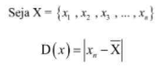
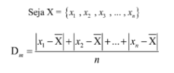
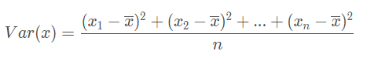
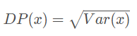

3.2 Desvio, Desvio Médio, Variância e Desvio Padrão:
Conteúdo Detalhado:
Desvio
É definido como a distância entre um dos elementos e a média aritimética de um conjunto. Sendo assim, para cada elemento do conjunto, o desvio pode ser diferente.

Desvio médio
É definido como a média aritimética dos desvios de cada um dos elementos de um conjunto.

Variância
A Variância é a média aritmética dos desvios quadrados entre os valores da variável e a média das observações.

Desvio padrão
O desvio-padrão de um conjunto de dados é calculado tirando a raiz quadrada da sua variância.
